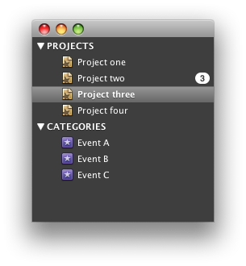

com.explodingpixels.macwidgets.SourceListDarkColorScheme
com.explodingpixels.macwidgets.SourceListDarkColorScheme
|
|||||||||
| PREV CLASS NEXT CLASS | FRAMES NO FRAMES | ||||||||
| SUMMARY: NESTED | FIELD | CONSTR | METHOD | DETAIL: FIELD | CONSTR | METHOD | ||||||||
java.lang.Object
public class SourceListDarkColorScheme
A SourceListColorScheme that provides Painters and colors to render a standard
Mac SourceList:

SourceList.setColorScheme(SourceListColorScheme),
SourceListTreeUI.setColorScheme(SourceListColorScheme)| Constructor Summary | |
|---|---|
SourceListDarkColorScheme()
|
|
| Method Summary | |
|---|---|
Color |
getActiveBackgroundColor()
The background color of the SourceList when it is in an active window. |
Painter<Component> |
getActiveFocusedSelectedItemPainter()
The Painter to use for drawing the SourceList selection when the
SourceList is in the active window and has focus. |
Painter<Component> |
getActiveUnfocusedSelectedItemPainter()
The Painter to use for drawing the SourceList selection when the
SourceList is in the active window and does not have focus. |
Color |
getActiveUnselectedBadgeColor()
The color to draw a badge's background with when it's corresponding SourceList item
is unselected and the SourceList is in an active window. |
Color |
getBadgeTextColor()
The color to draw a badge's text with. |
Color |
getCategoryTextColor()
The color to draw a SourceList category with. |
Color |
getCategoryTextShadowColor()
The color to draw a SourceList category's shadow with. |
Color |
getInactiveBackgroundColor()
The background color of the SourceList when it is in an inactive window. |
Painter<Component> |
getInactiveSelectedItemPainter()
The Painter to use for drawing the SourceList selection when the
SourceList is in an inactive window. |
Color |
getInativeUnselectedBadgeColor()
The color to draw a badge's background with when it's corresponding SourceList item
is unselected and the SourceList is in an inactive window. |
Color |
getSelectedBadgeColor()
The color to draw a badge's background with when it's corresponding SourceList item
is selected. |
Icon |
getSelectedCollapsedIcon()
The icon to use when a SourceList node is collapsed and selected. |
Icon |
getSelectedExpandedIcon()
The icon to use when a SourceList node is expanded and selected. |
Color |
getSelectedItemFontShadowColor()
The color to draw a selected SourceList item's shadow with. |
Color |
getSelectedItemTextColor()
The color to draw a selected SourceList item with. |
Icon |
getUnselectedCollapsedIcon()
The icon to use when a SourceList node is collapsed and unselected. |
Icon |
getUnselectedExpandedIcon()
The icon to use when a SourceList node is expanded and unselected. |
Color |
getUnselectedItemTextColor()
The color to draw an unselected SourceList item with. |
| Methods inherited from class java.lang.Object |
|---|
clone, equals, finalize, getClass, hashCode, notify, notifyAll, toString, wait, wait, wait |
| Constructor Detail |
|---|
public SourceListDarkColorScheme()
| Method Detail |
|---|
public Painter<Component> getActiveFocusedSelectedItemPainter()
SourceListColorSchemePainter to use for drawing the SourceList selection when the
SourceList is in the active window and has focus.
getActiveFocusedSelectedItemPainter in interface SourceListColorSchemePainter to use for painting the selection in an active window where the
SourceList has focus.public Painter<Component> getActiveUnfocusedSelectedItemPainter()
SourceListColorSchemePainter to use for drawing the SourceList selection when the
SourceList is in the active window and does not have focus.
getActiveUnfocusedSelectedItemPainter in interface SourceListColorSchemePainter to use for painting the selection in an active window where the
SourceList does not have focus.public Painter<Component> getInactiveSelectedItemPainter()
SourceListColorSchemePainter to use for drawing the SourceList selection when the
SourceList is in an inactive window.
getInactiveSelectedItemPainter in interface SourceListColorSchemePainter to use for painting the selection in an inactive window.public Color getCategoryTextColor()
SourceListColorSchemeSourceList category with.
getCategoryTextColor in interface SourceListColorSchemeSourceList category textwith.public Color getCategoryTextShadowColor()
SourceListColorSchemeSourceList category's shadow with.
getCategoryTextShadowColor in interface SourceListColorSchemeSourceList category text's shadow with.public Color getUnselectedItemTextColor()
SourceListColorSchemeSourceList item with.
getUnselectedItemTextColor in interface SourceListColorSchemeSourceList item with.public Color getSelectedItemTextColor()
SourceListColorSchemeSourceList item with.
getSelectedItemTextColor in interface SourceListColorSchemeSourceList item with.public Color getSelectedItemFontShadowColor()
SourceListColorSchemeSourceList item's shadow with.
getSelectedItemFontShadowColor in interface SourceListColorSchemeSourceList item's shadow with.public Color getActiveBackgroundColor()
SourceListColorSchemeSourceList when it is in an active window.
getActiveBackgroundColor in interface SourceListColorSchemeSourceList when it is in an active window.public Color getInactiveBackgroundColor()
SourceListColorSchemeSourceList when it is in an inactive window.
getInactiveBackgroundColor in interface SourceListColorSchemeSourceList when it is in an inactive window.public Icon getUnselectedCollapsedIcon()
SourceListColorSchemeSourceList node is collapsed and unselected.
getUnselectedCollapsedIcon in interface SourceListColorSchemeSourceList node is collapsed and unselected.public Icon getUnselectedExpandedIcon()
SourceListColorSchemeSourceList node is expanded and unselected.
getUnselectedExpandedIcon in interface SourceListColorSchemeSourceList node is expanded and unselected.public Icon getSelectedCollapsedIcon()
SourceListColorSchemeSourceList node is collapsed and selected.
getSelectedCollapsedIcon in interface SourceListColorSchemeSourceList node is collapsed and selected.public Icon getSelectedExpandedIcon()
SourceListColorSchemeSourceList node is expanded and selected.
getSelectedExpandedIcon in interface SourceListColorSchemeSourceList node is expanded and selected.public Color getBadgeTextColor()
SourceListColorScheme
getBadgeTextColor in interface SourceListColorSchemepublic Color getSelectedBadgeColor()
SourceListColorSchemeSourceList item
is selected. This color is used regardless of the wheter the parent window is active or
inactive.
getSelectedBadgeColor in interface SourceListColorSchemeSourceList item is selectedpublic Color getActiveUnselectedBadgeColor()
SourceListColorSchemeSourceList item
is unselected and the SourceList is in an active window.
getActiveUnselectedBadgeColor in interface SourceListColorSchemeSourceList item is unselected and the SourceList is in an active
window.public Color getInativeUnselectedBadgeColor()
SourceListColorSchemeSourceList item
is unselected and the SourceList is in an inactive window.
getInativeUnselectedBadgeColor in interface SourceListColorSchemeSourceList item is unselected and the SourceList is in an inactive
window.
|
|||||||||
| PREV CLASS NEXT CLASS | FRAMES NO FRAMES | ||||||||
| SUMMARY: NESTED | FIELD | CONSTR | METHOD | DETAIL: FIELD | CONSTR | METHOD | ||||||||